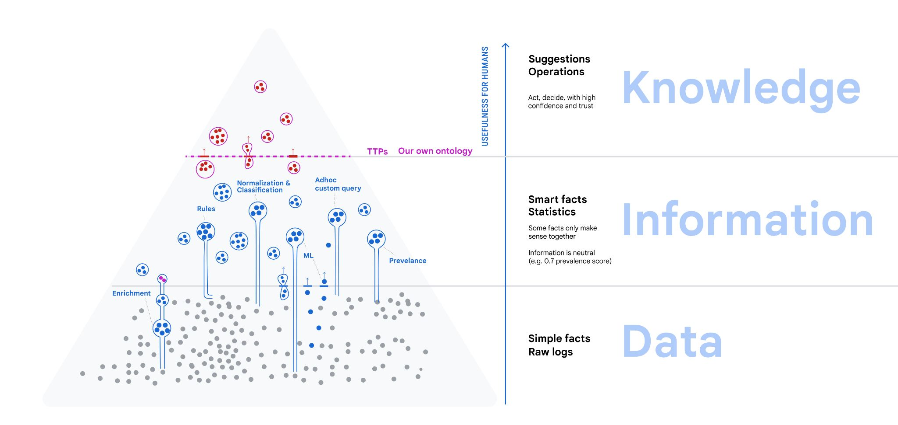
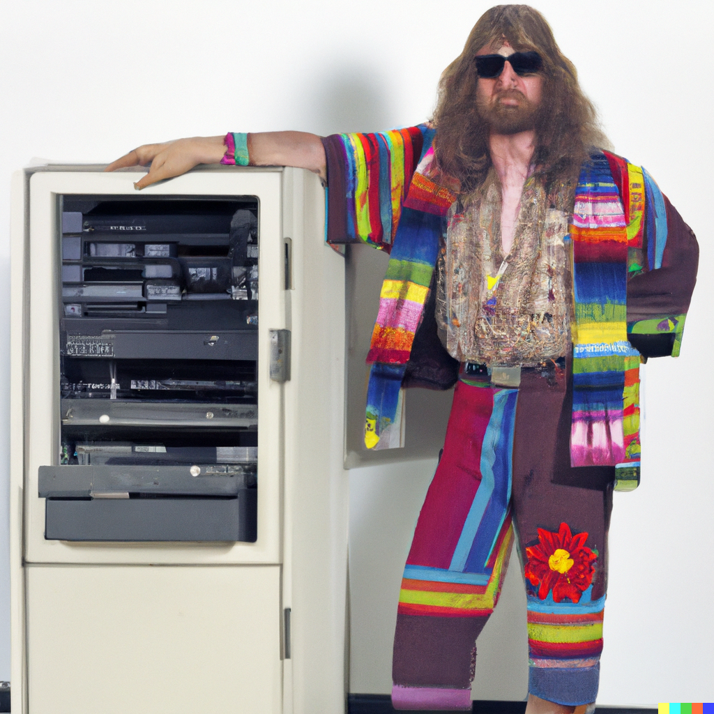
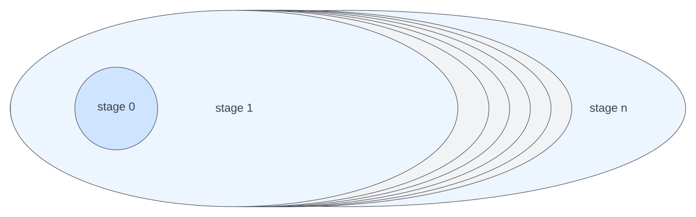

About Point-in-Time 01
Note: You can switch between web-version and presentation version with alt-p.
The material for this talk is available on the web.
Mangle "Point-in-Time" is information about Mangle as a language design and development project, organized as an mdbook.
As the name suggests, "Point-in-Time" is a snapshot of information. If you are looking for more up-to-date information, check out the Mangle docs at the Mangle GitHub repo.
"Point-in-Time" is written in markdown format using mdbook and mdbook-presentation-preprocessor and published on the web. Therefore, it is possible to submit pull requests with corrections, comments, links to more updated information.
Authors and Disclaimer
Burak Emir homepage.
All content, views, opinions are those of the author and not his employer.
What is in this issue 01
Mangle was open-sourced almost exactly 6 months ago (2022-11-25). It is far from complete and we move slowly and deliberaly on design decisions. Also there is usage so you won't see big breaking changes. Some background can be found on hackernews from Nov'22.
This issue was prepared on the occasion on a talk I gave (virtually) at Relational AI on 2023-05-12, and an internal talk.
Abstract: Mangle is a query language based on datalog with extensions for aggregations. I will talk about some of the principles that guided the extensions like structured data and function calls, and how type-checking works. Throughout we give some examples from the cybersecurity domain. We conclude with an outlook on what will be added towards a v1.0 release.
Bio: Burak Emir has been passionate about programming languages ever since working on pattern matching in Scala in Martin Odersky's group at EPFL. He joined Google in 2007 where he worked on various distributed systems projects part of products Google Calendar, Google Ads, Google Shopping, and more recently Security.
Data Information Knowledge
Mangle started out within a web app to access metadata of some artifacts.
I wanted to keep door open to large-scale data processing, and separate language from application.
The problem space, very broadly:
- analyze data and turn it into knowledge (analytics)
- make knowledge explicit, (ontology, logic/rules)
- ... in order to help communication and collaboration
- ... in a way that does not force us into a schema
- we knew that our ideas of entities, queries and UI would have to evolve.
The data-information-knowledge hierarchy distinguishes
- data: what comes in all shapes and forms, not yet organized.
- information is derived from data by organizing, classified, normalized
- knowledge is what can serve as specific answer that humans need when making decisions, judging a situation or taking actions in the pursuit of some outcomes.
All these involve querying.

Databases, pipelines, query processing
- SQL is likely the most prevalent language for querying data.
- But I remember a brief time where SQL was less relevant
- "NoSQL", sharding, bigtable, MapReduce, JavaFlume (Craig Chambers).
- through engineering, can store and query with high performance on many cheap servers
As a programming language, SQL is hopelessly anachronistic (1970s style).
- Not readable, not testable
- No proper abstraction mechanism (modules), copy-paste-reuse
- No standard extensibility (connecting to external systems), schema evolution issues
- No (easy, standard) way to deal with recursion / transitive closure
But why did SQL come back?
I have asked an AI to generate a picture of a SQL hacker in 1970s:

-
not only due to "familiarity" ...
- evolution ZetaSQL, BigQuery SQL with protos...
- relational algebra, first-order logic is a good foundation - "declarative"
- theory continues to be taught at university (even completely irrelevant stuff like normal forms) - there is material that can be taught
-
business reasons related to people/skills
- not everybody is an engineer,
- even for engineers, one may want to scale up to 1000s of queries or processing pipelines.
- not just familiar, but also familiar and high-level / declarative: can adapt to embarassingly parallel execution
Why is datalog even better as a foundation:
- can address shortcomings above
- if nothing else: implicit joins
A tour of Mangle
A "hosted" domain-specific language from the extended datalog family.
- meant to be used as library from within a general-purpose language.
- not an "embedded DSL" since it does not elements of the host language
Why? We want Mangle implementations in different host languages (e.g. Rust…).
(Eventually want to generate and run beam-go programs for large scale persisted data.)
What's up with the name?
A reference to "The Mangle of Practice: Time, Agency, and Science" by Andrew Pickering.
"The practical, goal-oriented and goal-revising dialectic of resistance and accommodation is, as far as I can make out, a general feature of scientific practice. And it is, in the first instance, what I call the mangle of practice, or just the mangle. I find "mangle" a convenient and suggestive shorthand for the dialectic because, for me, it conjures up the image of the unpredictable transformations worked upon whatever gets fed into the old-fashioned device of the same name used to squeeze the water out of the washing. It draws attention to the emergently intertwined delineation and reconfiguration of machinic captures and human intentions, practices, and so on."
Datalog
A "kernel" logic programming language. Example: reachability in a graph
edge(0, 1).
edge(1, 2).
edge(1, 3).
reachable(X, Y) :- edge(X, Y).
reachable(X, Z) :- edge(X, Y), reachable(Y, Z).
Datalog can be extended to support negation:
not_reachable(X, Y) :- node(X), node(Y), !reachable(X, Y).
Restrictions:
- no function symbols
- "datalog safety": all variables in head must appear non-negated in body.
- "stratified negation": only permit negation when a relation can be fully computed before evaluating. Then, negation simply means the fact is not present.
Name constants
We had to enumerate a lot of things, therefore added name constants.
Example: /foo
Names can be structured /foo/bar/baz. Not quite URIs, but almost: they identify "things",
# A way to give a name to a github_repo https://github.com/aioaneid/uzaygezen
github_repo(/aioaneid/uzaygezen).
github_repo(/apache/calcite).
github_repo(/google/zetasql).
github_repo(/google/mangle).
# percent-encoding "Health & Beauty"
product_category(/category/Health%20%26%20Beauty).
There is a built-in predicate :match_prefix(/prefix/name, /prefix)
Beyond datalog
Datalog is a "kernel" logic programming - but practical querying needs more.
Mapping (let-transform)
Transform data → "let-transforms", can call functions "in between" evaluation phases
foo(X) :- bar(Y) |> let X = fn:my_transformation(Y).
- "safety": a variable from head can also be bound in a let-transform
- want to make it easily recognizable what part is relational, what part is functional
- however, it was too tempting to admit function calls earler, so one can write this as follow:
foo(X) :- bar(Y), X = fn:my_transformation(Y).
Grouping and aggregations (do-transforms)
bar(X, Num) :- bar(Y, Z) |> do fn:group_by(Y), let Num = fn:count(Z).
foo(X, AllZ) :- bar(Y, Z) |> do fn:group_by(Y), let AllZ = fn:collect(Z).
- "safety": a variable from head can also be bound in a do-transform
- the
fn:group_byargument can be empty, a single variable from body, or a tuple or variables from the body AllZis a list (structured data).
Structured data
-
one can add lists
[e1,...,eN],fn:list(e1,...,eN) -
pairs
fn:pair(e1,e2), -
structs
{ /field: value }, -
maps
[ key: value ] -
"accessor" functions.
- An observation (without proof): datalog program with recursion and accessor function symbols will terminate.
What about other functions?
Mangle will not have full-fledged syntax for defining functions inline (maybe separately).
Instead, as it is hosted in some other language, there will be a way to register external functions, and maybe predicates.
Looking ahead even further, we'd like to:
- directly support functions that are implemented through WASM modules.
- have such functions/predicates do RPCs to other systems (e.g. retrieval, but also inference, embedding...).
This way, Mangle the language stays small and predictable, but the systems hosting Mangle can be extended.
Simple Cyber Example
Here is an example from the cybersecurity domain.
-
Queries over streams of events (observations e.g. logs, "facts")
- on host H, event A happened at time T1 and then event B happened at time T2
- Correlation, temporal reasoning not nice with SQL (or any language, actually).
-
This is how it might look in a datalog-like language:
# suppose T1, T2 are timestamps in seconds since epoch UTC
first_A_then_B(Host, T1, T2) :-
eventA(Host, T1),
eventB(Host, T2),
:happens_before_within(T1, T2, 10 * 60).
-
advantages of "Datalog-like" language:
- modularity/compositionality: can define
eventAandeventBpredicates elsewhere - readable predicate names
:happens_before_within
- modularity/compositionality: can define
-
however: can it be evaluated efficiently?
- classic DB query planning / optimization for the join
- distributed: instead of single-machine efficiency, how to shard/route and make embarrasingly parallel
- incrementality instead of periodic execution
-
There are lots of takes on "query language for event processing" ... there is a whole industry
- Google Chronicle Security Yara-L 2.0
- ElasticSearch Event Query Language
- Microsoft Sentinel Kusto Query Language
- Splunk Search Processing Language
- Sigma an attempt at a standard
-
Readability, metadata ("what does this detect?"), discoverability are all issues, and we all depend on interoperability being improved here (e.g. hospital ransomware attacks and such)
Time and Again
While a lot of business data fits in memory now, the volume can change if we preserve full history / time-series (e.g. system logs, observability)
There is in general no one-size-fits-all way.
(This was a subtle reference to Stonebraker and Cetintemel's "one-size fits all" paper).
The difference between processing and event-time starts to matter, optimistic execution whose results may be retracted later...
Being able to do incremental processing helps, but the full spectrum of low-frequency batch processing and line-rate stream processing is useful and needed.
A very desirable property would be to have declarative detection rules that work roughly the same, whether they are batch or stream processing.
Mangle as an extended datalog (with some tweaks, execution hints) may be useful, but beyond a certain point, scalable stream processing requires custom engineering for now (sharding, distribution, locality).
Type system
The type system is a work-in-progress.
I would have liked to present one, alas there are only fragments for now.
What is a type system good for?
"Well-typed programs cannot go wrong" (Milner)
A type system serves two purposes:
- prevents a class of programmer mistakes
- makes parts of the semantic structure explicit
The first point is what is taught to students. The second point is discourse among researchers, with a heavy bias towards formalizing mathematics.
The necessary jargon
Mathematics is not the only domain that has semantic structures worthy of making explicit. But mathematics provides us with the ways of talking about these objects.
Concretely, we have a type expression \( T \) that stand in for an object \( [\![T]\!] \). Type expressions are formal objects or "linguistic signs". They are enumerable.
If an expression \( e \) "can be assigned the type \( T \)" then
- we can talk about a "meaning" \( [\![e]\!] \)
- (soundness) \( [\![e]\!] \) is conforming to \( [\![T]\!] \)
Some remarks:
- Using the same symbols \( [\![\ ]\!] \) for taking expressions and type expressions to the "meaning" is a case of "overloading." Mathematicians love overloading as a means to conversation focused on what is essential. This is a form of abstraction.
- This is Church-style. We do not bother to give meanings to expressions that cannot be assigned a type. The alternative is Curry-style, define a "meaning" for all expressions, independent of whether they can assigned a type or not.
A simple way (not the only way) to make all this work is to say that:
- \( [\![T]\!] \) is a set.
- "conforming" is membership: \( [\![e]\!] \in [\![T]\!] \)
Simplicity is good, but we should not forget where we came from: a desire to prevent programmer mistakes and making part of the semantic structure explicit.
Elements of Mangle type system
Expressions
- base constants \( c \) like names, numbers, strings, ...
- structured constants
- lists \( [e_1, \ldots, e_n] \),
- pairs \( \mathtt{fn:pair}(e_1, e_2) \)
- maps \( [ e_1 : v_1, \ldots, e_n : v_n ] \)
- structs \( \{ l_1 : v_1, \ldots, l_n : v_n \} \)
Type expressions (meta variables \( S, T \))
- \( \mathtt{/any} \)
- base type expressions \( \mathtt{/name}, \mathtt{/number}, \mathtt{/float64}, \mathtt{/bool} \)
- stuctured types
- list type \( \mathtt{fn:List}(T) \)
- pair type \( \mathtt{fn:Pair}(S, T) \),
- map type \( \mathtt{fn:Map}(S, T), \),
- struct type \( \mathtt{fn:Struct}(k_1,T_1,...,k_n,T_n) \)
For example \( \mathtt{/bool} \) is a type expression, with \( [\![\mathtt{/bool}]\!] = \{\mathtt{/true}, \mathtt{/false}\} \) .
Finite models and finite theories
The history of programming languages starts with formal mathematical logic, types and metamathematics (Frege, Russell, Hilbert.) This is when we started subjecting the symbols used in mathematics to rigid, explicit, precise rules of formation and vocabulary. It is the beginning of metalanguage and object language.
When we talk about the linguistic domain of mathematics, restricting to anything finite means we will lose the mathematicians' interest.
Finite domains are practical value and therefore a simple starting point when programming system that serve practical purposes.
It is therefore good and useful to start with a domain of discourse assuming that deals with a finite amount of objects.
We can now define predicates which express how objects in the domain of discource are related.
In the language of set theory, the meaning of predicates is a relation (subset of cartesian product). A predicate can either be defined by enumerating (extensional predicate) or by describing rules (intensional predicate) and so on.
More generally, a theory is a set of propositions that are true. A finite model comes with a finite theory.
Declarations and Types
We can describe predicates further by being more specific on what types the arguments have.
Decl foo_pattern_first_A_then_B(Host, T1, T2)
descr [
doc("A detection rule expressing the foo pattern (a sequence of A and B)" ),
arg(Host, "name constant /host/fqdn prefix, with fully-qualified domain name"),
arg(T1, "a timestamp, seconds since epoch UTC"),
arg(Source, "the external source that ingests events")
]
bound [ /host/fqdn, /number, /number ].
# Let's query the data
? foo_pattern_first_A_then_B(/host/fqdn/burakemir.ch, X, Y)
Modularity and extensibility
From a programmer's point of view, it is desirable to split large programs into modules,
Mangle offers modules through the package mechanism:
- one can refer to public predicates in a package.
- (in the future) type declarations could be used to type-check module separately.
Currently, Mangle is interpreted and semantic analysis operates on a whole program.
Something akin to the "Rust orphan rule" which restricts trait implementations:
- One cannot add facts through unit clauses for predicates that live in separate modules
- An exception: for extensional predicates, it is allowed (path dependence)
- Esp. for testing, we'd like to set up facts for predicates in other modules...
Where is the AI?
We are getting there.
Stratified evaluation
Our Mangle programs are evaluated in layers (strata).
Each layer treates all predicates from the preceding one as extensional (fully computed, accessible).
This means, every layer adds new facts. Picture:

How does this help with my LLM use case?
The possibility of defining interesting relations in terms of other relations yields opportunities to apply ML:
- first, product the "right" numbers to statistical modeling, regression etc
- graph techniques, where we construct interesting graph elements (nodes, edges, subgraphs) through rules.
- graph ML as in link prediction, or prediction of attributes of nodes, edges, whole graph.
But you asked about LLMs.
- LLMs are interesting because they promise low-barrier access to AI without feature engineering and researcher etc.
- (things that have to be said)
- LLMs are "stochastic parrots"
- Any ML task cannot succeed without data and being able to evaluate quality of the task
- think about the integration in apps which is hard engineering work
- as all tech, think about the power structures, biases and your responsibility
Embedding and retrieval
It is expected that only large tech companies and nation states can produce LLMs.
The economic appeal is that fine-tuning and prompt engineering are avaiable to all.
A promising direction to use relational data is to:
- from a prompts/NLP query, extract entities
- retrieve related entities
- (similarity, embeddings, vector search)
- and/or predicates
- or ask the LLM what is related.
- send the enriched prompt to the LLM
The resulting interaction could look like this (where have I seen this before):
Truth through proof
(A subtle reference to P. Andrews logic textbook)
The words "proof" and "evidence" carry importance beyond the realm of formalized mathematics.
We want to make reasoning explicit - but:
- not all reasoning is certain, deductive.
- data may be unavailable, not trustworthy
- humans matter (we have a responsibility toward each other)
Having explicit rules means that definitions (vocabulary) and invariants. This means:
- it is easier to know which data we do have
- it is easier to automate certain, deductive reasoning
There will be always be judgment calls, and the need for human control and responsibility.
The more successful applications of AI will there not replace humans, but augment human work and decision making.
Augmenting the LLM
I believe (but cannot prove) that it will be much easier to enhance prompts with precise, accurate facts obtained from logic programming rather than doing detours through training, fine-tuning.
Rather than have AI solve Codd's "parts explosion" problem, it seems much easier to compute all the parts from our catalog and feed the result to the model and be done.
Mangle and datalog-based languages let us write that logic concisely and in a way that can be tested.
It will be interesting to see how logical inference and ML model inference can be alternated.
func TestTransformPartsExplosion(t *testing.T) {
store := factstore.NewSimpleInMemoryStore()
program := []ast.Clause{
// The 'component(Subpart, Part, Quantity)' relation expresses that
// <Quantity> units of <SubPart> go directly into one unit of <Part>.
clause(`component(1, 5, 9).`),
clause(`component(2, 5, 7).`),
clause(`component(3, 5, 2).`),
clause(`component(2, 6, 12).`),
clause(`component(3, 6, 3).`),
clause(`component(4, 7, 1).`),
clause(`component(6, 7, 1).`),
// The `transitive(DescPart, Part, Quantity, Path)` relation
// expresses that <Quantity> units of <DescPart> go overall into one
// unit of <Part> along a dependency path <Path>
clause(`transitive(DescPart, Part, Quantity, []) :- component(DescPart, Part, Quantity).`),
clause(`transitive(DescPart, Part, Quantity, Path) :-
component(SubPart, Part, DirectQuantity),
transitive(DescPart, SubPart, DescQuantity, SubPath)
|> let Quantity = fn:mult(DirectQuantity, DescQuantity),
let Path = fn:list:cons(SubPart, SubPath).`),
// The `full(DescPart, Part, Quantity) relation expresses that <Quantity>
// units of <DescPart> go overall into one unit of <Part>.
clause(`full(DescPart, Part, Sum) :-
transitive(DescPart, Part, Quantity, Path)
|> do fn:group_by(DescPart, Part), let Sum = fn:sum(Quantity).`),
}
if err := analyzeAndEvalProgram(t, program, store); err != nil {
t.Errorf("Program evaluation failed %v program %v", err, program)
return
}
transitiveAtom, err := functional.EvalAtom(atom("transitive(2,7,12,[6])"), ast.ConstSubstList{})
if err != nil {
t.Fatal(err)
}
expected := []ast.Atom{
transitiveAtom,
atom("full(2,7,12)"),
}
for _, fact := range expected {
if !store.Contains(fact) {
t.Errorf("expected fact %v in store %v", fact, store)
}
}
}
Other examples / ideas:
- kythe.io - semantic indexing of source code (a graph).
- distinguish between definition and use